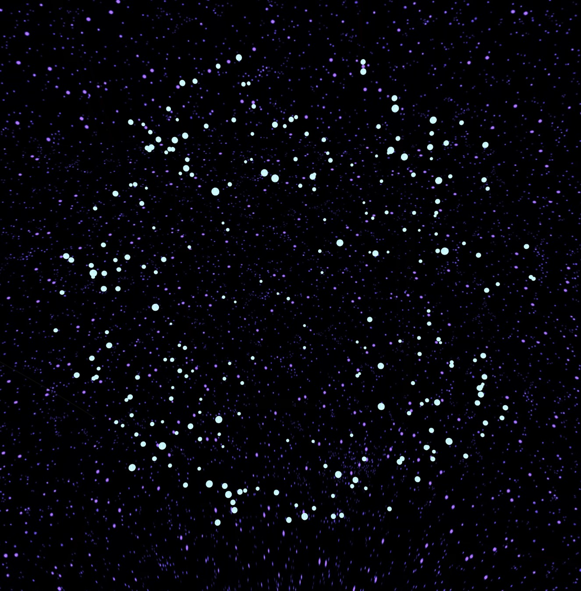

Prozessgalerie
Hello There! Das hier ist meine Prozessgalerie vom Colabor-Modul 2024 an der HSLU.
Hier zeige ich meine 4 Sketches, welche innerhalb dieses Moduls über 6 Wochen erarbeitet wurden. Ziel von mir war es die Ecken zu erkunden, für welche ich in Beautiful Mathematics keine Zeit hatte.
Sprint 1
Generativ
Im Sprint 1 ging es darum etwas Generatives zu erstellen. Meine Idee war es die Funktion createCapture() von p5.js zu nutzen. Diese verwendet die Kamera des Laptops und stellt diese dann für weitere Manipulationen zur Verfügung.
Im ersten linken Bild, welches ich erstellt habe, wurde ein Grid über die gesamten Canvas gespannt. Danach wurden Pixel, welche einen hohen Kontrast zu ihren Nachbarn aufweisen mit einer schwarzen Linie gekennzeichnet. Wenn ihr das austesten möchtet, könnt ihr einfach auf die beiden Bilder klicken.
Beim zweiten rechten Bild habe ich weiter entwickelt, sodass jetzt eine Abkantung im 45°-Winkel gezeichnet wird. Durch diese Änderung scheint das Bild mehr Tiefe zu erhalten.
Die grösste Herausforderung hier war es den Kontrast der Pixel im Video zu verarbeiten.
loadPixels();
let index = (x + (y*density * width)) * 4*density;
let index = (x + (y*density * width)) * 4*density;
let r = pixels[index];
let g = pixels[index + 1];
let b = pixels[index + 2];
let a = pixels[index + 3];
//TopColor
let indexTop = (x + ((y-cellSize)*density * width)) * 4*density;
let colorTop = color(pixels[indexTop],pixels[indexTop+1],pixels[indexTop+2],pixels[indexTop+3]);
let c = color(r, g, b, a);
Sprint 2
Sprache
Im zweiten Sprint ging es darum Sprache zu integrieren.
Meine Idee war es für den zweiten Sprint eine Markov Chain zu benutzten. Vereinfacht gesagt benutzt die Markov Chain einen bestehenden Text. Ein Wort wird als Startwort definiert, danach schaut die Markov Chain, welche Worte im Text nach diesem folgten. Falls es mehrere Optionen gibt, wird eine zufällige gewählt, so entstehen neue Sätze.
Als Textdatenbank fand ich es lustig, einige Spam E-Mails, die man täglich ins E-Mail-Postfach gespült bekommt, zu nutzen. Von diesen habe ich 5 ausgewählt. Als optische und auditive Begleitung habe ich versucht das Star Wars Intro nachzubauen. Da ich in einem vorherigen Modul die Markov Chain schon einmal behandelt habe, war die Herausforderung hier die Rekonstruierung des Star Wars Intros.

Für diesen Sketch habe ich WEBGL als Canvas genutzt. WEBGL ermöglicht es im dreidimensionalen Raum zu arbeiten. So muss ich den Text nicht manuell verziehen sondern kann diesen durch den Raum ziehen und ihn immer weiter weggleiten lassen.
Sprint 3
Sound
Als meinen dritten Sketch wollte ich ein kleines Tool erstellen. Die User sind in der Lage eine beliebiges Audio File hochzuladen und eine kleine visuelle und auditive Stimulation zu erfahren. Die Richtung des Audios folgt dem gelben Kreis. Zudem reagiert der gelbe Kreis auf Ausschläge des Audios. Mit dem Regler kann diese Sensibilität eingestellt werden. Falls man ein neues Audio ausprobieren möchte, kann man auf Reset drücken oder die Seite neu laden.

Die Ringe habe ich selbst generiert mit Hilfe von BeginShape() und EndShape().
beginShape(TRIANGLE_STRIP);
for (let i = 0; i <= detail; i++) {
let theta = map(i, 0, detail, 0, TWO_PI);
// Outer circle top
let x1 = outerRadius * cos(theta);
let y1 = outerRadius * sin(theta);
let z1 = depth / 2;
// Inner circle top
let x2 = innerRadius * cos(theta);
let y2 = innerRadius * sin(theta);
let z2 = depth / 2;
// Draw top strip
vertex(x1, y1, z1);
vertex(x2, y2, z2);
}
endShape(CLOSE);
Für die Richtung des Audios habe ich panning verwendet und dieses auf die Position des Kreises gemapped.
let panning = map(mouseX, 0, width, -1, 1);
sound.pan(panning);
Sprint 4
Vertiefung
Im Sprint 4 geht es darum einen der letzten Sprint Sketches weiterzuentwickeln. Dafür haben wir uns dazu entschieden, ein gemeinsames Projekt in der Gruppe zu kreieren. Wir knüpfen dafür an dem Projekt von Marina, «Supernova» an. Das Projekt soll visuell an das Sterben eines Stern erinnern und dazu im Einklang eines gleichnamigen Songs sein.
Für die Erarbeitung unseres Projekts haben wir die Arbeit folgender Massen aufgeteilt. Marina hat sich mit Shader und der p5-Sound Library beschäftigt, Christina hat sich mit den Texturen der Planeten und des Panoramas beschäftigt und ich habe mich Allgemein mit dem Ablauf und der 3D Welt beschäftigt.